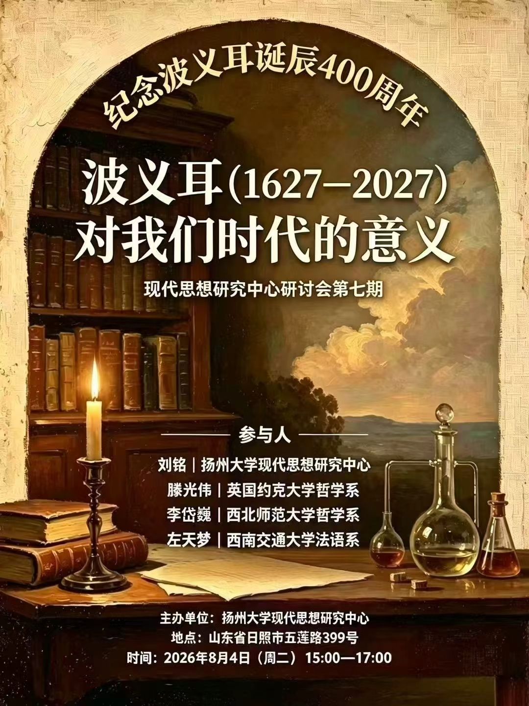
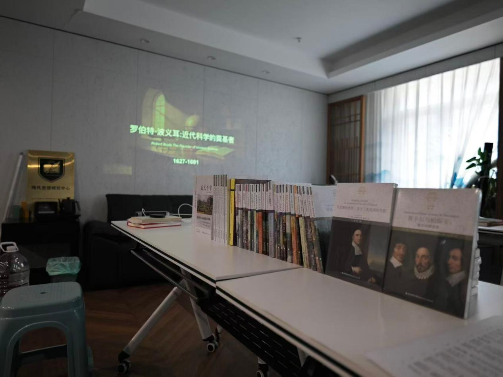
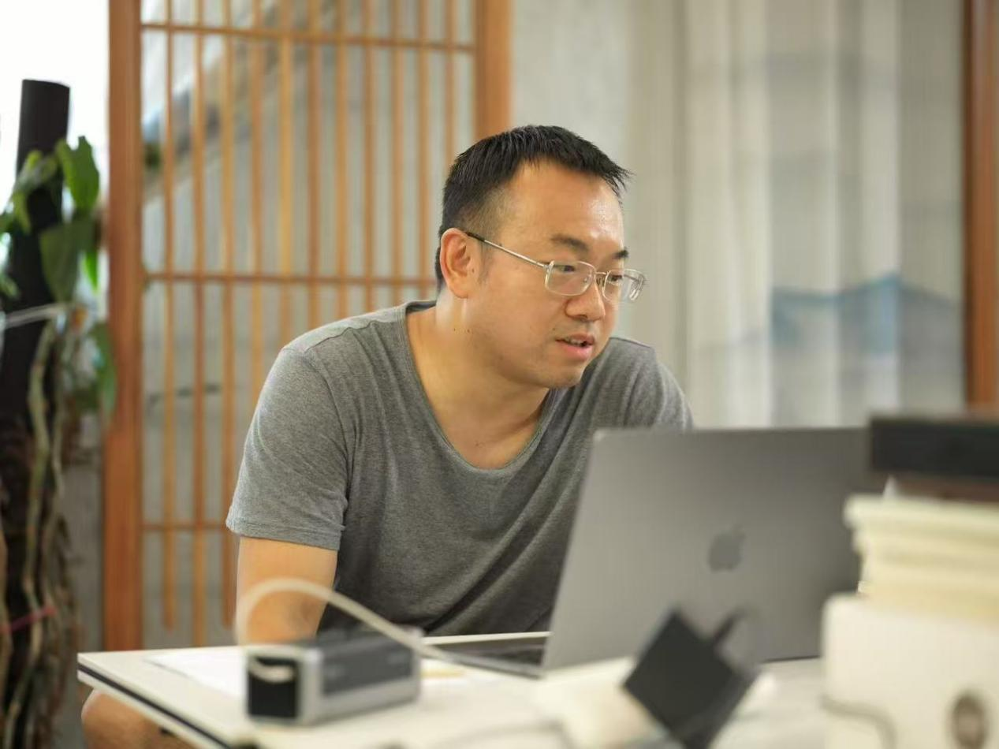
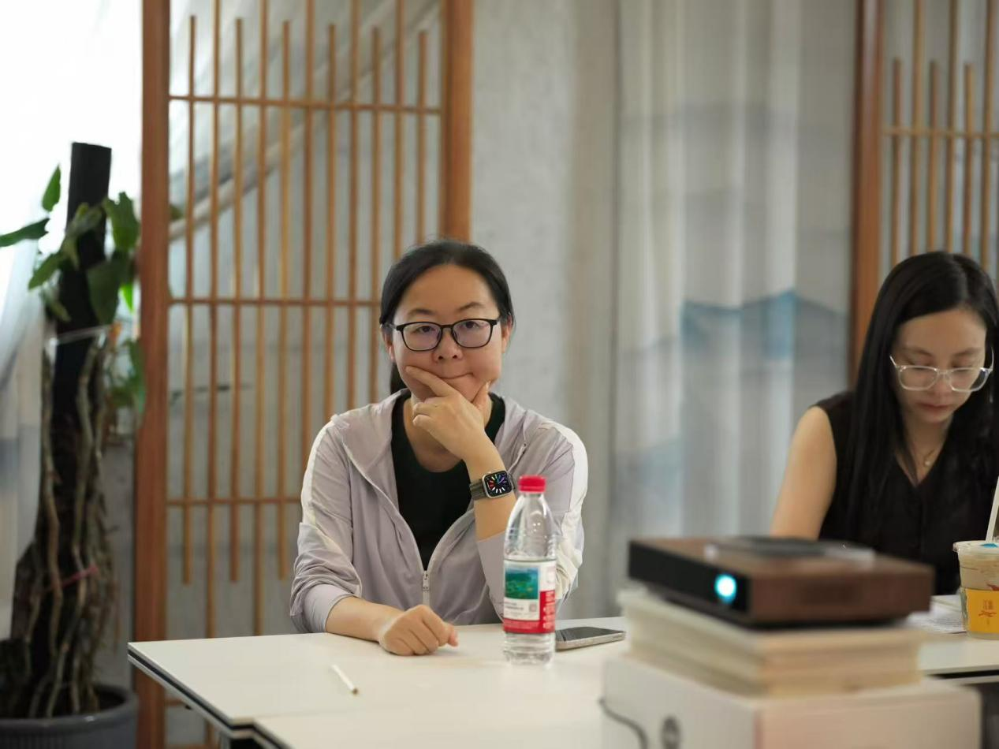
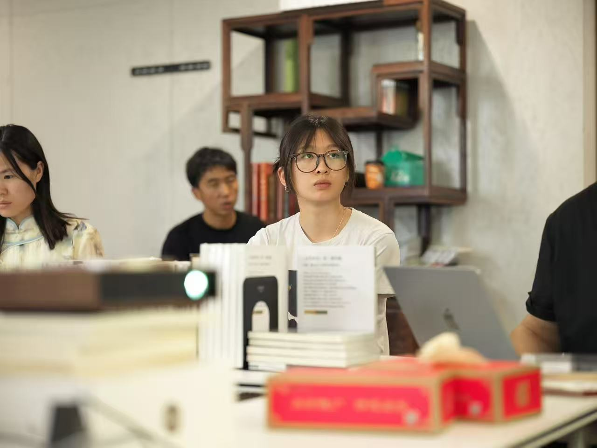
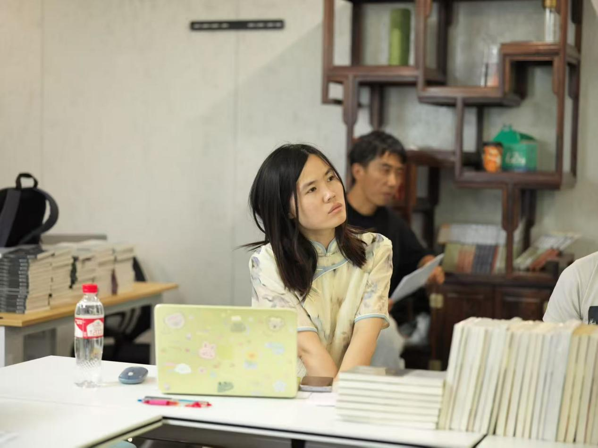
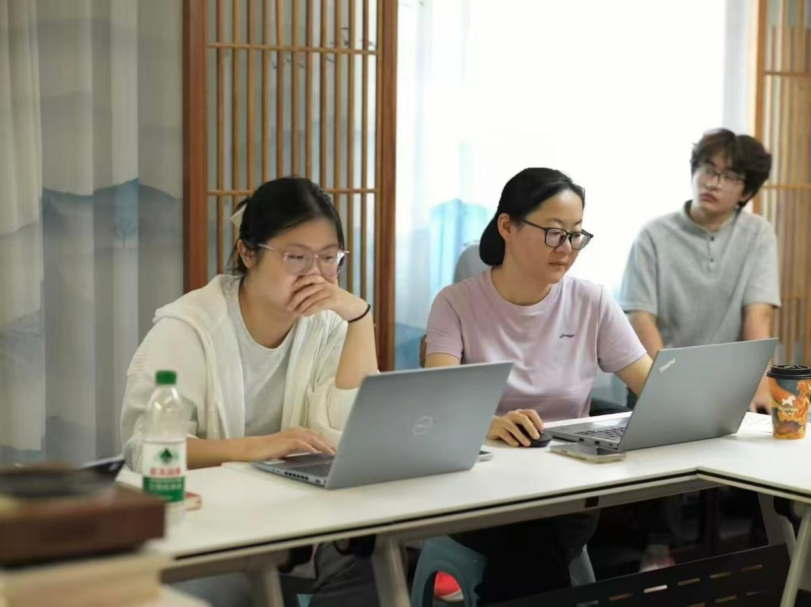
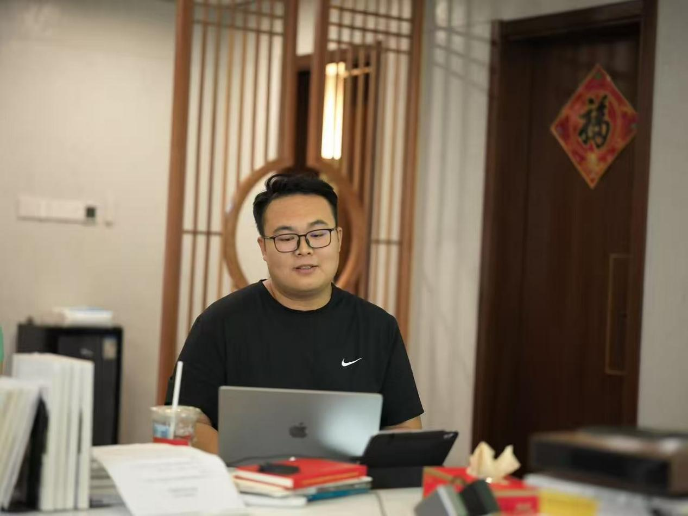

活动概述
2026 年 8 月 4 日，由扬州大学社会发展学院现代思想研究中心主办的系列学术工作坊在山东日照举行。会议以“纪念罗伯特·波义耳（Robert Boyle）诞辰400周年：波义耳（1627—2027）对我们时代的意义”为主题，围绕《近代哲学》第二期“波义耳与近代实验哲学”的主题以及稿件评审、出版规范和后续研究展开研讨。扬州大学社科处领导参与并致辞，来自全国各地的校内外学者及硕博研究生参加了会议讨论。
波义耳与实验哲学
李岱巍梳理了波义耳的生平、著作和研究史。他指出，波义耳约在 1649 年前后由道德、宗教写作转向实验自然哲学，其重要贡献之一，是推动形成重视记录、公开和重复检验的知识生产方式，使自然知识能够接受共同体检验。
许宇璐以波义耳与巴鲁赫·斯宾诺莎（Baruch Spinoza）的硝石实验论争为例，讨论实验能否决定性地证明物质种类变化，以及理论应如何参与实验解释。她指出，斯宾诺莎并不排斥实验；双方的分歧不能简单概括为“实验主义与纯理性主义”，而是涉及实验、理论和证明标准之间的关系。
思想影响与研究史
左天梦分析了波义耳的微粒哲学及物质性质理论对洛克和牛顿的影响，指出洛克讨论第一性质与第二性质时沿用了波义耳的术语与微粒论背景，同时提醒研究者重视波义耳自然哲学中的宗教关切。刘琪通过安东尼奥·克莱里库齐（Antonio Clericuzio）的研究说明，波义耳有时诉诸带有化学性质的微粒，并未把化学现象完全还原为机械性质，从而为化学保留了相对于机械学的解释自主性。
皮立雨以彼得·安斯蒂（Peter Anstey）的研究为线索，梳理弗朗西斯·培根（Francis Bacon）—波义耳—罗伯特·胡克（Robert Hooke）的实验哲学传统。他指出，牛顿并未使这一传统简单“退场”，而是在主动认同实验哲学的同时，以数学化方法对其作出重构。郭雨婷评议了迈克尔·亨特（Michael Hunter）的波义耳传记，认为该书借助书信、手稿等一手资料，呈现了波义耳的宗教信仰、炼金术活动与自然研究，有助于摆脱把科学家塑造成单一理性英雄的辉格式叙事。
出版安排与后续交流
围绕《近代哲学》第二期集刊，会议提出统一波义耳中文版著作和通信译名，由现代思想研究中心与出版社对接海外文献版权事项，以原创性、专业性和译文质量为审核重点，并在延续首期版式的基础上进一步完善编辑与设计。
会议重点介绍了英国学术院院士（FBA）、波义耳研究学者迈克尔·亨特的学术贡献。亨特是 14 卷本《波义耳著作集》和 6 卷本《波义耳通信集》的主要编辑。英国约克大学哲学系博士研究生滕光伟介绍了国际波义耳研究动态以及亨特教授的生平与学术生涯，并分享了近期拜访亨特教授的感想。
会议共识
与会者认为，纪念波义耳应进一步落实为文献整理、经典翻译和问题研究。中心将继续推进第二期集刊的修订出版，完善译名规范，并以专题组稿和国际交流带动近代哲学与科学思想史研究团队的建设。
活动照片






